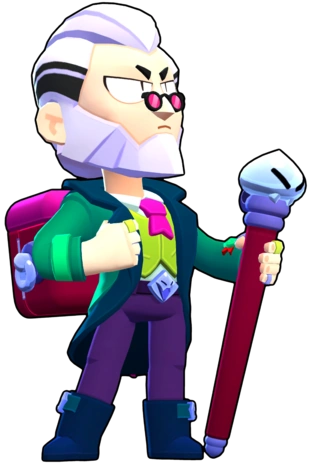

¿Quién es Byron?
Byron vende medicamentos extremadamente fuertes de eficacia probada. ¡Ni se te ocurra llamarle engañabobos!
Byron es un Brawler Mítico que ataca con dardos que cuando impacta con un enemigo le quita vida por segundo y si impacta con un aliado le restaura vida por segundo y su súper es una sustancia que cura a los aliados y daña a los enemigos.
|  |
NIVEL DE FUERZA 11 |
Sus gadgets
AUTOMEDICACIÓN: Byron usa una de sus inyecciones en sí mismo para recuperar 1200 puntos de salud por segundo durante 3 segundos |
INYECCIÓN DE REFUERZO: El siguiente ataque de Byron dispara 3 dardos en vez de uno, y cada uno inflige un 20% menos de daño, y cura un 40% menos. |
Sus habilidades estelares
 |
MALESTAR: El súper de Byron también hace que los rivales consigan un 75% menos de curación de cualquier fuente durante 9 segundos. |
 |
INYECCIÓN: Cada 3,5 segundos, el siguiente ataque básico atravesará a los objetivos. |
 Braian Arancibia
Braian Arancibia Aya El Baarar
Aya El Baarar